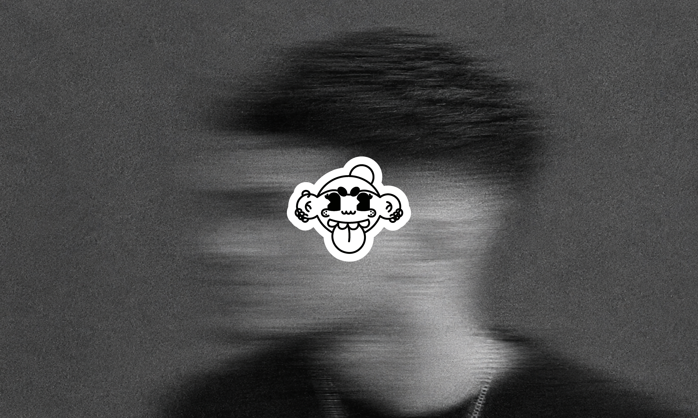
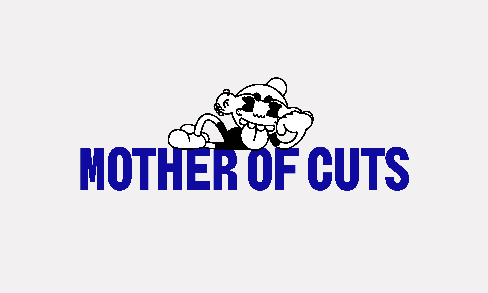
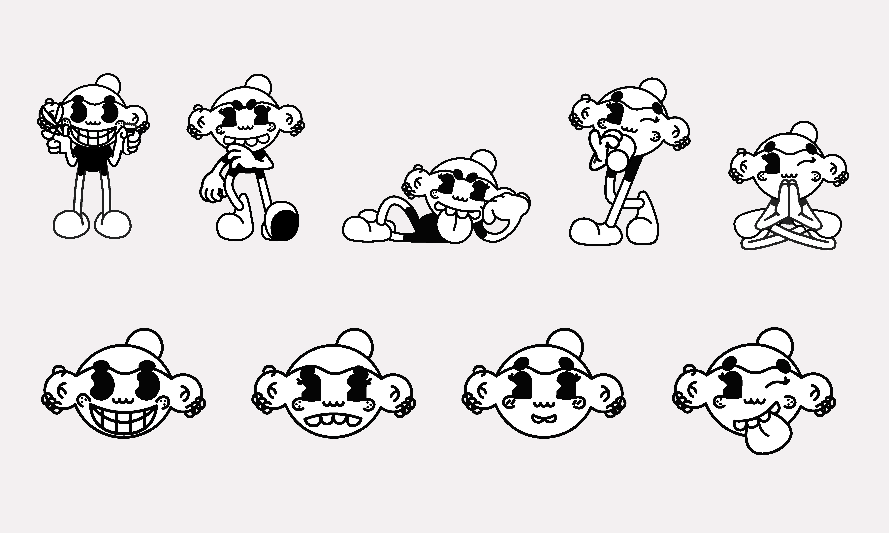
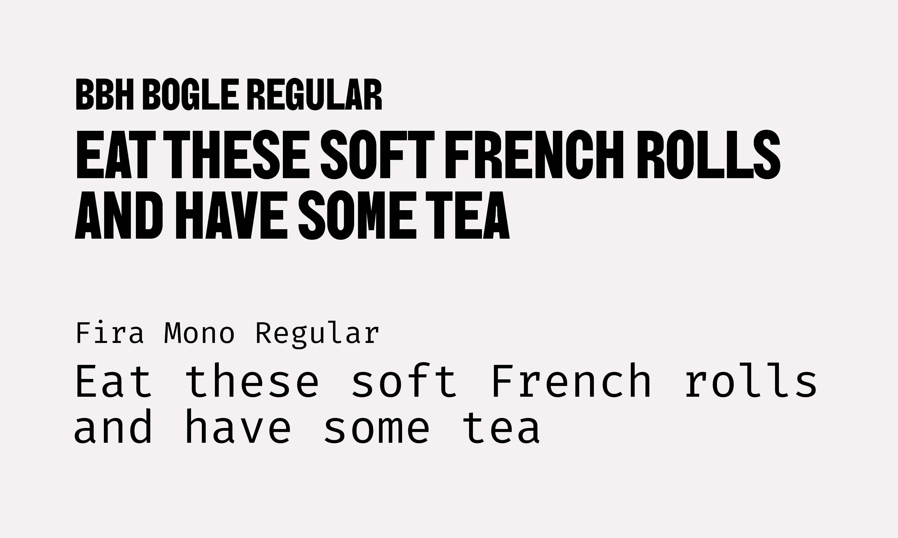
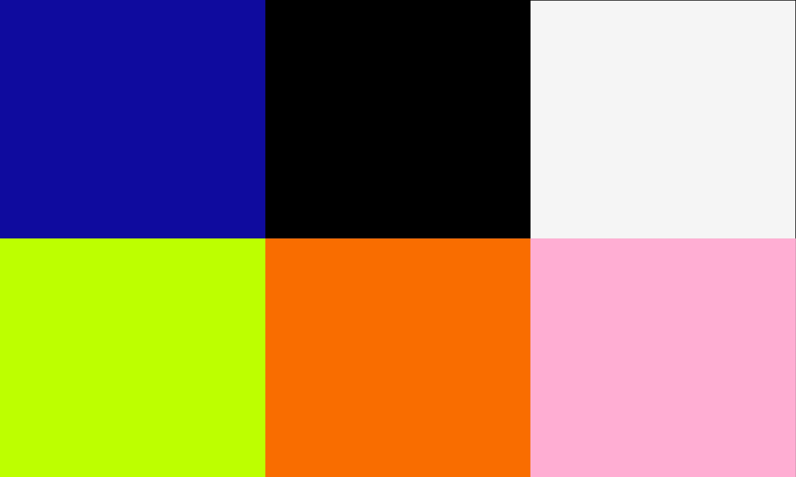

Фирменный стиль для личного бренда барбера, ориентированного на молодую аудиторию. Задача — создать узнаваемый образ в дерзкой, винтажной и гранжевой эстетике.
У бренда не было цельной визуальной системы. Нужно было объединить существующие идеи в последовательную айдентику и передать характер мастера через визуальный язык.
Я разработал фирменный стиль: маскот и логотип, типографику, систему цветов.
Центром системы стал маскот с разными позами и эмоциями, который делает коммуникацию живой и узнаваемой.
Для заголовков выбран BBH Bogle Regular, для основного текста — Fira Mono Regular. За основу цветовой системы взяты заданные заказчиком цвета: черный, белый и индиго, а оранжевый, лаймовый и розовый используются как акцентные.
Сформирована цельная визуальная система с ярким характером, которую можно использовать в разных форматах, а маскот стал эмоциональным центром бренда.



